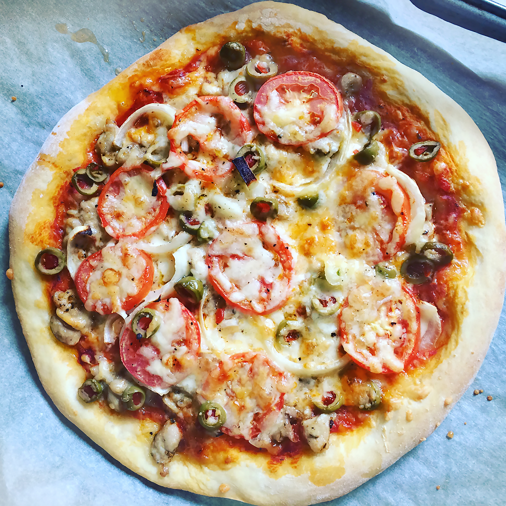

Quick and Easy Homemade Pizza

Description
Pizza is a dish of Italian origin consisting of a usually round, flat base
of
leavened wheat-based dough topped with tomatoes, cheese, and often various
other ingredients (such as various types of sausage, anchovies, mushrooms,
onions,
olives, vegetables, meat, ham, etc.), which is then baked at a high
temperature,
traditionally in a wood-fired oven.
If you're looking for a homemade pizza recipe that's quick and easy for
beginners,
you're at right Place. This Pizza recipe is super easy to make and
requires
just a few ingredients,
Let’s do this!
Ingredients
For the dough:
- 1 1/2 cups all-purpose flour, plus more for working
- 1 cup semolina flour, plus more for dusting
-
1 tablespoon extra-virgin olive oil, plus more for bowl and brushing
- 1 cup warm water (about 110 degrees)
- 1/2 teaspoon sugar
- 2 teaspoons coarse salt
For the sauce:
- 2 small shallots, finely chopped (about 2 tablespoons
- 2 tablespoons extra-virgin olive oil
- 2 garlic cloves, minced
- 1 can (28 ounces) whole peeled plum tomatoes with juice
- 1/4 teaspoon freshly ground pepper
- 1/2 teaspoon coarse salt
- Pinch of sugar
For the toppings:
- 2 tablespoons freshly grated Parmesan cheese
- 300 gram of fresh mozzarella cheese, thinly sliced
- 12 fresh basil leaves
- 12 fresh basil leaves
Instructions for preparing Pizza
-
Make the dough: Pour water into the bowl of an electric mixer.
Add
sugar and yeast; stir until yeast has dissolved. Let stand until foamy,
about 5 minutes.
Add oil, flours, and salt. Fit mixer with paddle
attachment; mix until combined. Switch
to dough hook; mix 5 minutes. Transfer dough to a lightly floured
surface, and knead a few
times with floured hands until smooth and elastic. Transfer dough to a
large oiled bowl,
and turn to coat; cover with plastic wrap. Let rise in a warm,
draft-free place until doubled in bulk,
about 3 hours. (Alternatively, let dough rise in the refrigerator
overnight.)
-
Make the sauce: Pulse tomatoes in a blender until smooth; set aside. Put
garlic and oil into a medium
saucepan. Cook over medium-high heat, stirring, until garlic sizzles,
about 40 seconds. Add shallots;
cook, stirring, 1 minute. Add tomatoes, salt, pepper, and sugar. Reduce
heat to medium-low.
Simmer, stirring occasionally, 30 minutes. Remove from heat; let cool
slightly.
(Sauce can be refrigerated in an airtight container up to 3 days.)
-
Preheat oven to 450 degrees. Preheat a baking sheet. Punch down dough;
transfer to a floured work surface.
Divide dough in half. Set half aside, and cover with plastic wrap. Roll
out remaining dough to 14 by 7 inches,
1/8 to 1/4 inch thick. Sprinkle a pizza peel with semolina flour, and
place rolled dough on top.
-
Brush top of dough lightly with oil. Spread with 1/2 cup sauce, leaving
a 1/2-inch border. Top with half
the mozzarella. Sprinkle with 1 tablespoon Parmesan, and season with
pepper.
-
Slide pizza onto heated sheet in oven. Bake until dough is golden and
cheese is bubbling, 10 to 12 minutes.
Meanwhile, repeat process with remaining dough. Let each pizza cool
slightly; top with half the basil.
Cut into slices, and serve.
Hurray! you have made these delicious pizza, now you can enjoy these
with you family and friends.